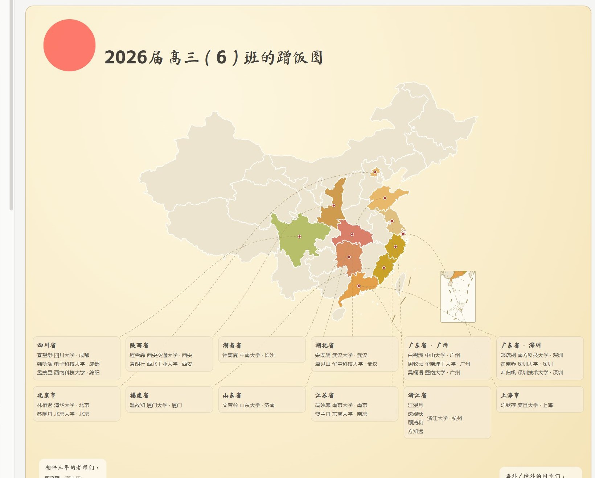
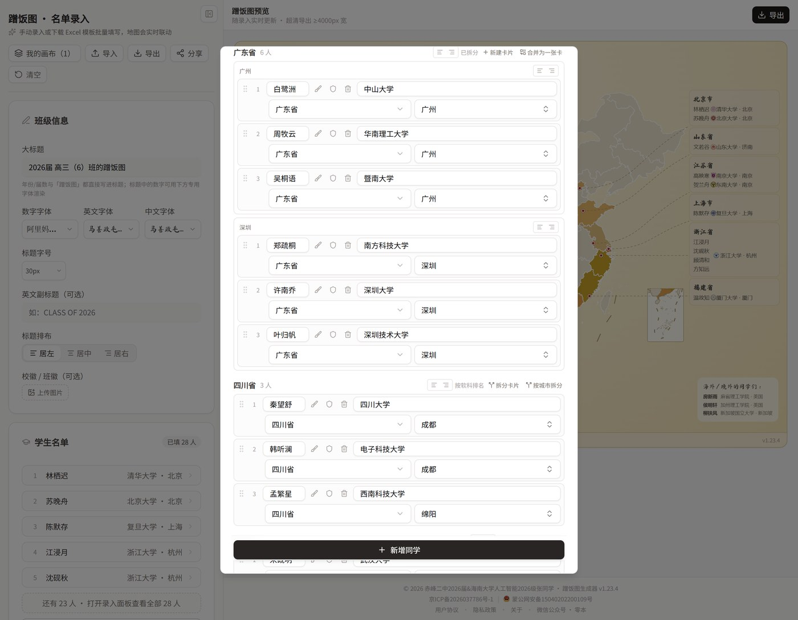
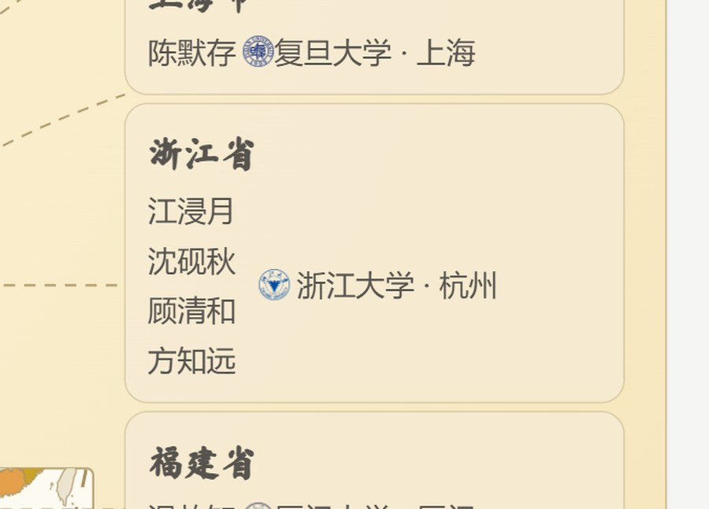
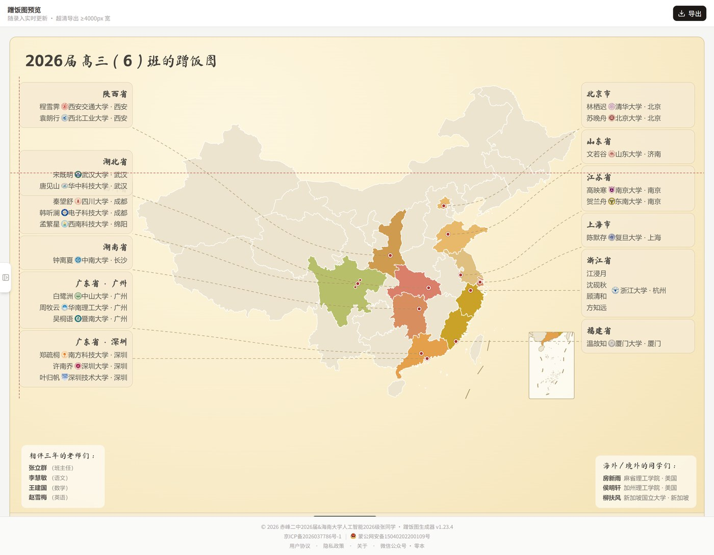
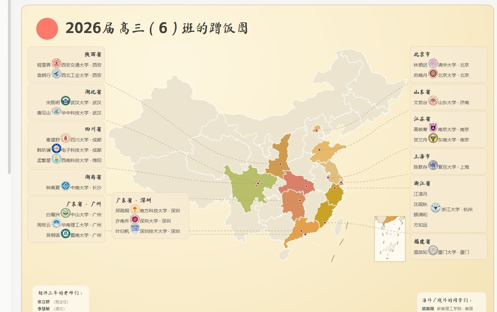
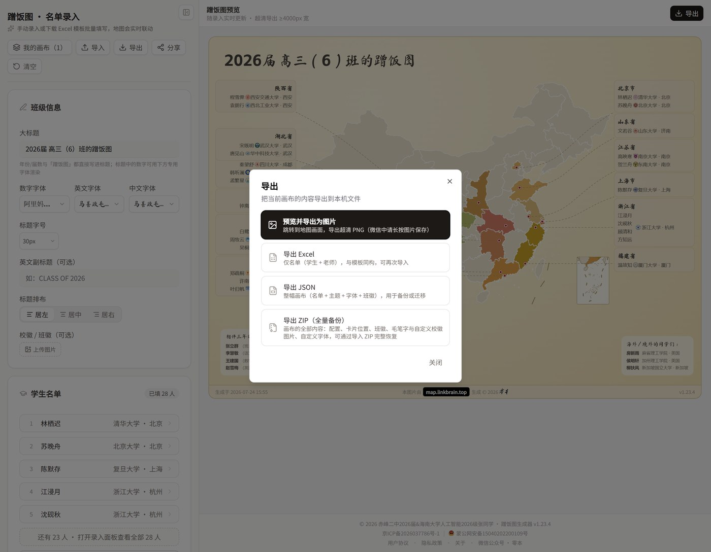
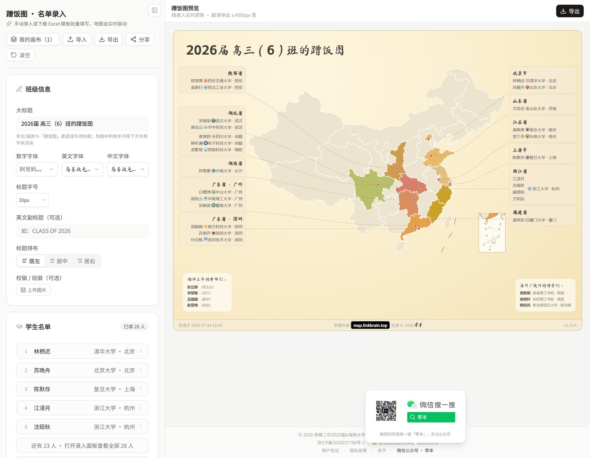

海内存知己，天涯若比邻。
上线以来，蹭饭图生成器没有停下来。十余个版本的迭代之后，今天做一次集中汇报。
这次更新的主线只有一条：让每一颗星都被妥善安置。一个省去了十几个人的班级、同寝室考进同一所大学的四个人、去了大洋彼岸的同学、装不下名字的屏幕——这些真实班级反馈回来的问题，现在都各自有了答案。
工具依然免费，无需注册，所有数据只保存在你自己的浏览器里。打开 map.linkbrain.top 即可使用。
示例：一幅 28 人的蹭饭图（图中人物均为虚构）
排版引擎
蹭饭图最难的从来不是画地图，而是把几十个人的名字摆好看。这次，整个排版引擎被重写了一遍。
■ 竖版排版
在「一列、两列、自定义」之外，新增第四种排布：竖版。所有省份卡片集中到地图下方，按行流式排布、整体居中，引线照常从城市定位点落到卡片顶边。名单再长，画布只会向下生长，不会左右溢出。这是一种更接近「榜单」的阅读顺序：先看版图，再看名单。

竖版排版：版图在上，名单在下（示例人物均为虚构）
■ 省份卡片拆分
一个省的人再多，也不必挤在一张卡里。任何省份都可以拆成多张卡片——可以一键「按城市拆分」，广州一张、深圳一张；也可以随手拆。每张卡片独立定位、独立引线，同学可以在卡片之间自由分配（电脑端拖动，手机端用上下按钮越过卡片边界），随时一键合并还原。

录入面板：广东省拆成「广州」「深圳」两张卡
■ 同校合并
考进同一所大学的人，姓名一人一行竖排，校徽和校名只出现一次。谁和谁又成了校友，一眼可见。

同校合并：四个名字站成一队，「浙江大学 · 杭州」只写一遍
■ 会呼吸的画布
画布不再是固定的板子。卡片向外拖，画布跟着长大；向里收，边界跟着收紧——左右两侧各自贴合本侧内容，不强求对称，边界与最外侧卡片之间始终保留一段呼吸距离。
拖动也有了手感：移动卡片时亮起对齐辅助线，靠近其他卡片的顶、中、底或左右边缘时轻轻吸附。左列的卡片，现在也能和右列对齐。

拖动中的对齐辅助线：横竖两条基准线，靠近即吸附
每一个人
■ 走得更远的人，也有位置
有同学去了大洋彼岸。中国地图装不下他们，但蹭饭图不能没有他们。把省份选为「海外 / 境外」，TA 就会出现在地图右下角的专属区块里，标注所在的国家或地区，不再强行指向地图上的某个点。用 Excel 批量导入时，填上国家名也能自动识别。
■ 校徽与班徽，大小由你
行内校徽新增大小滑块（50%–200%），自动匹配的校徽和用户自己上传的，都按同一个倍率缩放；放大后行高自动扩展，不会压到相邻的名字。想让某一个人的校徽更醒目？打开录入面板中 TA 的校徽设置，还有一个只属于 TA 的大小滑块，在全局倍率的基础上叠加。
标题区的班徽同样可调（24–96px）。加上此前的毛笔字图片大小滑块，图上每一张图片的尺寸，现在都由你说了算。

校徽放大至 200%：行高自动让位，互不挤压
工程细节
■ 打包一切，随时搬走
名单、主题、六个字体槽位、每一张卡片的位置、班徽、毛笔字、自定义校徽与自定义字体——可以完整打包成一个 ZIP。换电脑、换浏览器，导入即还原，连卡片拖过的位置都分毫不差。导入前会先给你一份摘要：这份备份里有几个人、带了哪些资源，确认后再载入，不覆盖手上的任何一张图。

导出面板：图片、Excel、JSON、ZIP 全量备份
■ 导出，更进一步
地图页点「导出」直接生成超清 PNG——宽度不少于 4000 像素，与你的屏幕分辨率无关；导出过程可随时取消，进度条会告诉你还需要几秒。校徽图片在导出前统一预载，第二次导出几乎是瞬时的。
■ 那些看不见的地方
打开页面的瞬间，骨架屏先勾勒出页面轮廓；地图轮廓数据从代码包里挪了出去，字体按用到的字符区间分片并行加载——首屏快了一截。城市坐标查询做了合并与缓存，打开名单不再重复请求。
老师名单块的标题可以改成任何你想写的话，字号可调，整块可以在画布上自由拖动；手机上拖卡片如果检测到卡顿，页面会轻声提示你推荐到电脑端进行，并告诉你怎样把画布带过去。页脚还多了一个小入口：「微信公众号 · 零本」，悬停或点按即可看到二维码。

页脚新增「微信公众号 · 零本」，悬停即见二维码
写在后面
这个工具还很年轻，也还有很多不够好的地方。好在每一条反馈都被认真对待——这次更新里的每一项，几乎都来自真实班级使用后的声音。
如果你已经把蹭饭图发进了班级群，欢迎回来告诉我们大家的第一反应；如果你才刚刚开始，愿它陪你把这个夏天收藏好。
散作满天星，聚是一顿饭。记得常回来蹭饭。
立即生成你们班的蹭饭图
map.linkbrain.top
点击公众号名片关注《零本》，回复「蹭饭图」获取直达链接
蹭饭图生成器的著作权归 © 2026 赤峰二中2026届&海南大学人工智能2026级张新越 所有。
编辑：张新越
监制：李翼安 刘轩博